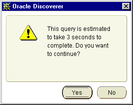

10g (9.0.4)
Part Number B10270-01
Library |
Contents |
Index |
| Oracle Discoverer Administrator Administration Guide (Online Help) 10g (9.0.4) Part Number B10270-01 |
|
This chapter explains how to use query prediction in Discoverer Administrator and contains the following topics:
Discoverer includes functionality to predict the time required to retrieve the information in a Discoverer query. The query prediction appears before the query begins, enabling Discoverer users to decide whether or not to run the query. This is a powerful facility that enables Discoverer users to control how long they wait for large reports.
Query Prediction uses the Cost-Based Optimizer (CBO) in the Oracle RDBMS. Therefore query prediction is not available when running against other databases.
Discoverer end users can specify that they be informed when a query is predicted to take longer than a defined time. A dialog displays the query prediction details and the option to cancel the query.

If the user chooses to cancel the query they can schedule the workbook for Discoverer to run the query later, for example, overnight so that the user can open the worksheet the next morning (for more information about scheduling workbooks in Discoverer Plus, see the Oracle Application Server Discoverer Plus User's Guide). For more information about enabling end users to schedule workbooks using Discoverer Administrator, see Chapter 7, "Scheduling workbooks".
Discoverer end users might find that query prediction is not available when running a worksheet. To see possible reasons (in Discoverer Administrator), choose Help | Database Information to display the "Database Information dialog". Query prediction might not be available for any of the following reasons:
| Reason | Solution |
|---|---|
|
Connection to a database that does not support query prediction (e.g. Oracle 7.1.x) |
Upgrade the database. |
|
Views required for query prediction are not available. |
Refer to "How to make the necessary database views available for query prediction" |
|
The timed-statistics parameter in init<sid>.ora is set to FALSE (the default value). |
Refer to "How to verify and change the timed_statistics parameter for query prediction" |
|
Data tables have not been analyzed. |
Refer to "How to analyze data tables" |
|
The optimizer mode parameter in init<sid>.ora is set to RULE instead of CHOOSE |
Refer to "How to verify and change the optimizer_mode parameter for query prediction" |
When users have confidence in the speed and accuracy of query prediction, they will be more likely to schedule long-running queries to run later. With accurate query prediction, the load placed on the server is typically reduced and query performance is improved for all users.
To implement query prediction effectively:
Various database views must have the SELECT privilege granted to the public user before query prediction is enabled in Discoverer. For more information, see the Oracle9i documentation.
To make the necessary views available for query prediction, for Oracle9i databases:
For example, if SQL*Plus is already running, you might type the following at the command prompt:
SQL> CONNECT sys/sys_pw@database AS SYSDBA;
Where sys is the SYS user and sys_pw is the SYS user password.
SQL> CONNECT username/password@database AS SYSDBA;
The username must have sufficient privileges to complete the following grants.
SQL> grant select on v_$session to public; SQL> grant select on v_$sesstat to public; SQL> grant select on v_$parameter to public;
Note: To grant SELECT ON V_$PARAMETER you must be logged in as the SYS user. If you are unsure about the SYS user name and password, see your database administrator.
To make the necessary views available for query prediction, for Oracle databases earlier than Oracle9i:
connect internal
SQLDBA> grant select on v_$session to public; SQLDBA> grant select on v_$sesstat to public; SQLDBA> grant select on v_$parameter to public;
Note: To grant SELECT ON V_$PARAMETER you must be logged in as the SYS user. If you are unsure about the SYS user name and password, see your database administrator.
The timed_statistics parameter found in the database view v_$parameter must be set to TRUE to enable query prediction in Discoverer.
To verify that timed_statistics is set to TRUE:
For example, if SQL*Plus is already running, you might type the following at the command prompt:
SQL> CONNECT dba_user/dba_pw@database;
Where dba_user is the database administrator and dba_pw is the database administrator password.
SQL> select value from v$parameter where name = 'timed_statistics';
If the query returns the value TRUE, timed_statistics is set correctly for query prediction. If the query returns the value FALSE, query prediction will not be available unless you change the value of the timed_statistics parameter in the init<sid>.ora file.
To edit the init<sid>.ora file:
The INIT<SID>.ORA file is held in <ORACLE_HOME>\database. The default name of the file is INITORCL.ORA, where ORCL is the <SID> name.
timed_statistics = TRUE
Discoverer uses the results of data table analysis for query prediction. Data table analysis generates information about the database tables (e.g. the size of a table). For more information, see the Oracle9i database documentation.
To analyze data tables:
For example, if SQL*Plus is already running, you might type the following at the command prompt:
SQL> connect tab_owner/tab_pw@database
Where tab_owner is the username and tab_pw is the password of the data table owner.
To verify that the optimizer_mode parameter is set to CHOOSE:
For example, if SQL*Plus is already running, you might type the following at the command prompt:
SQL> CONNECT dba_user/dba_pw@database;
Where dba_user is the database administrator and dba_pw is the database administrator password.
SQL> select value from v$parameter where name = 'optimizer_mode';
If the query returns the value CHOOSE, optimizer_mode is set correctly for query prediction. The system will use the Cost Based Optimizer if the tables have been analyzed, and the Rule Based Optimizer if the tables have not.
If the query returns the values FIRSTROWS or ALLROWS, optimizer_mode is also set correctly for query prediction
Both FIRSTROWS and ALLROWS force the use of the Cost Based Optimizer, even if the tables have not been analyzed.
If the query returns the value RULE, query prediction will not be available unless you change the value of the optimizer_mode parameter in the init<sid>.ora file.
To edit the init<sid>.ora file:
The INIT<SID>.ORA file is held in <ORACLE_HOME>\database. The default name of the file is INITORCL.ORA, where ORCL is the <SID> name.
optimizer_mode = CHOOSE
Discoverer uses the Cost-Based Optimizer within the query prediction process. Note that the Cost-Based Optimizer only parses the query statements, and that query execution is usually governed by the server's default optimizer mode.
In a large schema environment (e.g. Oracle Applications), the database can take a long time to parse a statement using the Cost-Based Optimizer. The query prediction process might therefore take several minutes to complete.
If users are having to wait a long time before the query prediction process is complete, consider the following three solutions:
In the Windows registry, set the DWORD value of the HKEY_CURRENT_USER\Software\Oracle\Discoverer9\Database\QPPEnable registry key to 0 (zero).
If you subsequently decide to re-enable query prediction, either remove the registry key or set it to 1.
For more information about Discoverer registry settings stored in the Windows registry, see Chapter 20, "About Discoverer Administrator and Discoverer Desktop registry settings".
Change the value of the QPPEnable registry setting in the .reg_key.dc Discoverer registry file. If QPPEnable is set to 01 00 00 00, query prediction is turned on. To turn query prediction off, set QPPEnable to 00 00 00 00.
For more information about Discoverer registry settings stored in the .reg_key.dc file, see Chapter 20, "About Discoverer Plus and Discoverer Viewer registry settings".
In the Windows registry, set the DWORD value of the HKEY_CURRENT_USER\Software\Oracle\Discoverer9\Database\QPPCBOEnforced registry key to 0 (zero).
When this registry key is set to zero, use of the Cost-based Optimizer (CBO) is not enforced and will follow the normal rules of the database server.
If you subsequently decide that you want query prediction to force the use of the Cost-Based Optimizer, either remove the registry key or set it to 1.
For more information about Discoverer registry settings stored in the Windows registry, see Chapter 20, "About Discoverer Administrator and Discoverer Desktop registry settings".
Change the value of the QPPCBOEnforced registry setting in the .reg_key.dc Discoverer registry file. If QPPCBOEnforced is set to 01 00 00 00, query prediction will enforce the use of the cost-based optimizer. To specify that query prediction is to use the default optimizer, set QPPCBOEnforced to 00 00 00 00.
For more information about Discoverer registry settings stored in the .reg_key.dc file, see Chapter 20, "About Discoverer Plus and Discoverer Viewer registry settings".
For more information about database parameters, see the Oracle9i documentation.
Discoverer's query prediction feature uses the EXPLAIN PLAN statement to analyze queries. However, EXPLAIN PLAN cannot analyze queries against secure views, with the result that query prediction is not normally able to work in these environments. To work around this limitation, grant your users access to the system view V$SQL.
To grant your users access to the system view V$SQL, for Oracle9i databases:
For example, if SQL*Plus is already running, you might type the following at the command prompt:
SQL> CONNECT sys/sys_pw@database AS SYSDBA;
Where sys is the SYS user and sys_pw is the SYS user password.
SQL> grant select on v_$sql to public;
To grant your users access to the system view V$SQL, for Oracle databases earlier than Oracle9i:
connect internal
SQLDBA> grant select on v_$sql to public;
<ORACLE_HOME>\discoverer\util\eulsuqpp.sql
You must know the SYSTEM password to use this script.
Query prediction statistics can become obsolete for many reasons. You can delete all query prediction statistics that were created before a specified date.
To delete old query prediction statistics from the database:
For example, if SQL*Plus is already running, you might type the following at the command prompt:
SQL> connect jchan/tiger
Where jchan is the EUL owner's username and tiger is the EUL owner's password.
For example you might type the following at the command prompt:
SQL> start d:\<ORACLE_ HOME>\discoverer\util\eulstdel.sql
Where <ORACLE_HOME> is where Discoverer Administrator is installed.
A summary of the query statistics stored in the database is displayed. You are given the option to delete query statistics older than a specified number of days.
If you do not specify a number of days, no query statistics are deleted.
|
|
 Copyright © 2003 Oracle Corporation. All Rights Reserved. |
|